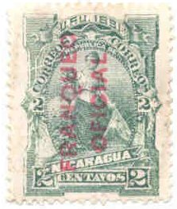
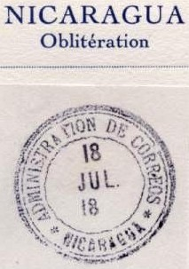

{kind=link}

Return To Catalogue - Nicaragua postage stamps - Fiscal stamps and fiscal stamps used for postal purposes
Note: on my website many of the
pictures can not be seen! They are of course present in the
catalogue;
contact me if you want to purchase it.
1 c blue 2 c blue 5 c blue 10 c blue 20 c blue 50 c blue 1 P blue 2 P blue 5 P blue 10 P blue

1 c green 2 c green 5 c green 10 c green 20 c green 50 c green 1 P green 2 P green 5 P green 10 P green
1 c yellow 2 c yellow 5 c yellow 10 c yellow 20 c yellow 50 c yellow 1 P yellow 2 P yellow 5 P yellow 10 P yellow

1 c grey 2 c grey 5 c grey 10 c grey 20 c grey 25 c grey 50 c grey 1 P grey 2 P grey 5 P grey 10 P grey
1 c orange 2 c orange 5 c orange 10 c orange 20 c orange 50 c orange 1 P orange 2 P orange 5 P orange 10 P orange
1 c green 2 c green 5 c green 10 c green 20 c green 50 c green 1 P green 2 P green 5 P green 10 P green

1 c red 2 c red 5 c red 10 c red 20 c red 50 c red 1 P red 2 P red 5 P red
(Reduced size)
1 c orange 2 c orange 5 c orange 10 c orange 20 c orange
(Reduced sizes)
1 c red 2 c red 5 c red 10 c red 20 c red 50 c red 1 P red 2 P red 5 P red
(reduced sizes)
1 c red 2 c red 5 c red 10 c red 15 c red 20 c red 50 c red 1 P red 2 P red 5 P red

1 c green 2 c brown 4 c red 5 c blue 10 c orange 15 c brown 20 c green 50 c red 1 P red 2 P lilac 5 P blue
1 c brown 2 c red 4 c olive 5 c blue 10 c violet 20 c brown 50 c red 1 P blue 2 P orange 5 P black Overprinted '1901' and value

(Reduced size)
'1 cent.' on 2 c red '1 cent.' on 1 p blue '3 cents.' (red) on 5 p black '4 cents.' on 3 p orange Overprinted '1902' and value
'1 cent.' on 2 c red '1 cent.' (red) on 1 p blue '2 cents.' (blue) on 2 p orange '3 cents.' (red) on 5 p black Overprinted '1904' and value '1 cent.' on 2 c red Overprinted 'OFICIAL' and value (both in red) '1 Centavos' on 10 c violet '2 Centavos' on 1 p blue Surcharged '10 Ctvs.' on 20 c brown '30 Ctvs.' on 20 c brown '50 Ctvs.' on 20 c brown
Later issues:


Inscription 'Republica de Nicaragua (1896) 1 c orange 1 c violet (1897) 2 c orange 2 c violet (1897) 5 c orange 5 c violet (1897) 10 c orange 10 c violet (1897) 20 c orange 20 c violet (1897) 30 c orange 30 c violet (1897) 50 c orange 50 c violet (1897) Inscription 'Estado de Nicaragua' (1898)
1 c green 1 c red (1899) 2 c green 2 c red (1899) 5 c green 5 c red (1899) 10 c green 10 c red (1899) 20 c green 20 c red (1899) 30 c green 50 c green 50 c red (1899)

1 c brown 2 c orange 5 c blue 10 c violet 20 c brown 30 c green 50 c red
Examples:
Some stamps of Nicaragua were overprinted 'Cabo', 'CABO' or 'CABO GRACIAS', example:
(Reduced size)
Exists also in 2 c (orange), 4 c (brown), 5 c (blue), 20 c (brown), 30 c (green) and 50 c (red).
I have seen the value 1 c blue in the above design.
Many telegraph stamps were issued in Nicaragua.
Examples of postage stamps, overprinted with 'TELEGRAFOS':



{kind=link}
{kind=link}